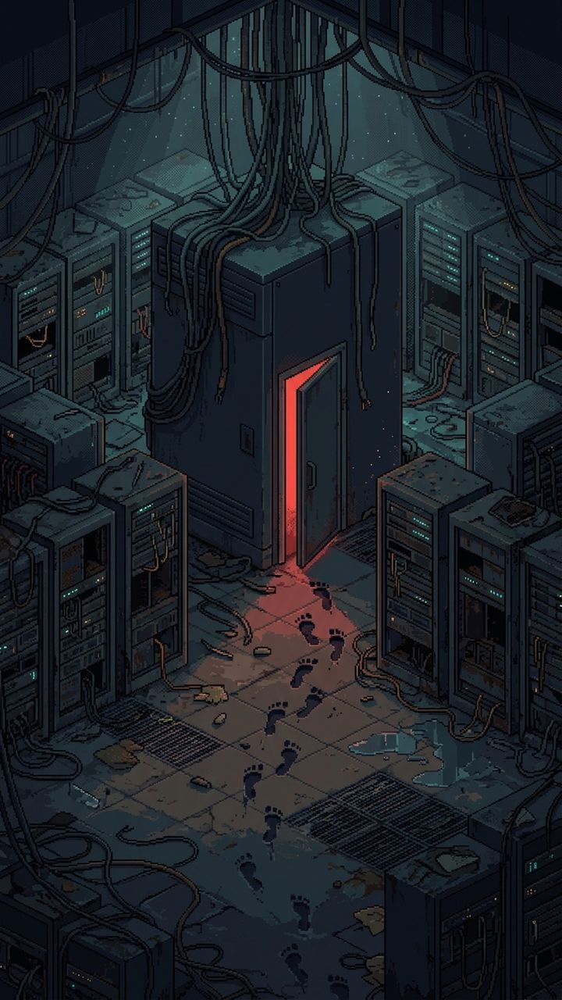
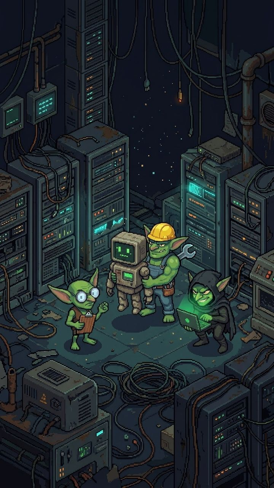
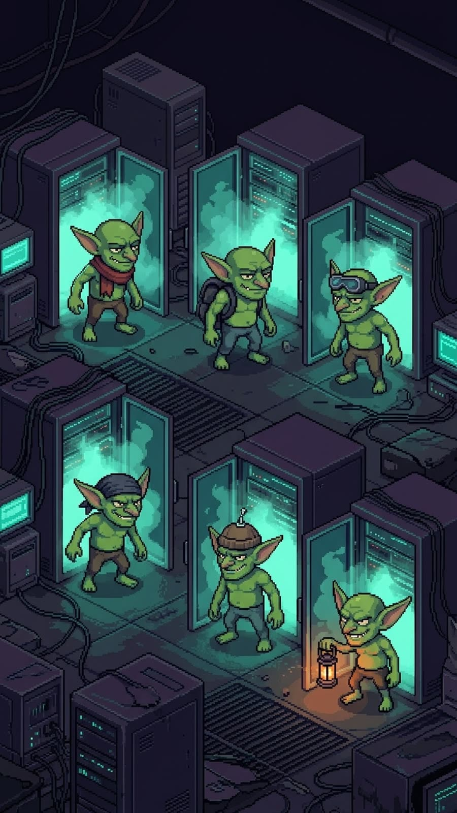

Grub
Wrench. Hard hat. Bad ideas.
Rips out dead servers to make room. Believes every problem is a loose bolt. Wants to turn it off and on again.
New ticket from the basement
A server rack coughed up three goblins. They have wrenches, a router and zero patience for bad AI answers. Join the horde and grab the free Goblin Prompt Pack.
Get the free pack ▶Free. Name, email and phone to unlock. No spam from the basement.
We crawled out of a dead rack in an abandoned data center. It was cold, dark and, somehow, still plugged in. Nobody asked us to run an account. We run it anyway.
Wrench. Hard hat. Bad ideas.
Rips out dead servers to make room. Believes every problem is a loose bolt. Wants to turn it off and on again.
Glasses. Clipboard. A burnt router.
Swears he will make the router talk. Reads every prompt twice and sighs. Wants to keep everything, just in case.

Hood. Laptop. On lookout duty.
Sits on the air conditioner and watches the dark. Somebody has to stay awake. Mostly wants to eat.
Episode 2 update: nobody commented a name, so the goblins drafted the first six followers. Welcome to the horde: @victor_automates, @mcautomate, @tajnyslipy, @rinraroyl, @anaar_net and @stck.wrld. Follow the account and you walk out of the next server with your @ over your head.

That is João Gabriel. He runs JGA, a small studio in Sete Lagoas, Brazil, where he builds websites, apps and videos by talking to AI all day. The goblins are his. The pages are his. The dumb jokes are, sadly, also his.
Every prompt in the pack is short, plain and made to be tweaked. If it sounded like fluff, the goblins threw it in the trash.
The goblins read the logs. These three tickets show up every single day.

Ticket #001
You ask a simple thing and get a brochure. Polite, long and useless.
The fix: prompts that cut the filler and demand a straight answer.

Ticket #002
Every new chat starts from zero. The AI guesses your goal, guesses wrong, and you pay in time.
The fix: a context loader that makes the AI ask first, then answer.

Ticket #003
The answer looks perfect, so you trust it. Later you find out it made things up.
The fix: a source check that marks what needs verifying before you use it.
One card per episode. Every ticket the goblins solve comes with something you can use. New card, new reel.

Episode 1 · “Zero”
10 copy-and-paste prompts. Fix lazy answers, load context, check sources, get clean formats.
Unlock it free
Episode 2 · “Six”
Six followers became goblins. Now the horde wants your ticket: what is the one boring task you wish AI would just do for you? Answer in one word on the reel.
Answer on Instagram
Episode 3 · “The Flood”
You sent the boring tasks. The horde turned them into 7 prompts you can paste into any AI.
Unlock it freeEpisode 3 · ticket closed
You told the horde which boring tasks AI should just do. The goblins wrote one prompt for each: work, homework, dinner, writing, the truth, fixing things and growing an account. Drop your details and they open right here.
Tap Copy, paste into ChatGPT, Claude, Gemini or any chat AI, then replace the [brackets].
Work: messages piling up.
Here are the messages I need to deal with: [paste emails or chats]. Sort them into three groups: REPLY TODAY, CAN WAIT, IGNORE. For every REPLY TODAY, write a short reply in a plain, friendly tone (4 sentences max). Then give me a to-do list of everything I promised someone. If a reply needs a fact I did not give you, write [ASK] instead of guessing.
Homework: learn it, don't fake it.
I am studying [topic] for [class or level]. Explain it in plain words in under 150 words, with one everyday example. Then quiz me with 3 questions, one at a time. Wait for my answer before the next one. Never give the answer before I try. If I get it wrong, give me a hint first. At the end, tell me the one part I should review again.
Dinner and groceries.
Here is what I have at home: [list the food you have, or attach a photo of your fridge if your AI accepts images]. I have [minutes] minutes and these tools: [stove, oven, microwave]. Give me 3 dinner ideas that use mostly what I already have, each in 6 short steps or fewer. Then write a grocery list only for what is missing, grouped by store section.
Writing: notes to first draft.
Topic: [topic]. Reader: [who will read it]. Length: [number] words. Here are my messy notes: [paste notes]. Write a first draft that keeps my points and my order. Plain words, no filler, no long intro. Then list the 3 weakest spots in the draft and ask me one question about each.
Find out what is true.
Here is a claim, post or article: [paste it]. List every factual claim in it. Mark each one SURE, PROBABLY or CHECK THIS. For every CHECK THIS, tell me what kind of source would confirm it and what to search for. Do not invent sources or links. If you are not sure, say so.
Something is broken.
Something is broken: [device, app or thing]. What happens: [describe the problem]. What I already tried: [list]. Ask me up to 3 questions first. Then give me checks from easiest to hardest, one at a time, and wait for my result after each one. Tell me clearly when it is time to stop and call a professional.
Grow an account.
My account is about [topic], for [who follows it]. Give me 10 post ideas, each one answering a real question this audience has. For each idea, write a hook under 8 words and the one thing the viewer learns. No hype words. If an idea needs a fact, mark it [CHECK].
AI makes mistakes. Read the answer before you use it. No paid tool needed.
Last call
Join the horde. Drop your details and the Goblin Prompt Pack opens right here, right now: 10 prompts, ready to copy.
Tap Copy, paste into your AI, replace the [brackets]. Works with any chat AI.
Rewrite weak prompts.
Act as a prompt editor. Here is my prompt: [paste prompt]. Tell me in 3 bullets what is vague or missing. Then rewrite it so a stranger could follow it. Keep my goal. Do not answer the prompt itself.
Stop re-explaining.
Here is the background: [paste what the AI needs to know]. My goal is [goal]. Before you answer, ask me up to 5 questions you need answered. Wait for my replies, then do the task.
Cut the brochure voice.
Rewrite the text below. Remove filler, hype and anything that does not add information. Use short sentences and plain words. Keep every fact. Text: [paste text]
Know what to verify.
List every factual claim in your last answer. Mark each one: SURE, PROBABLY, or CHECK THIS. For every CHECK THIS, say what kind of source I should look at to confirm it. If you made up anything, say so.
Find the holes.
Here is my plan: [plan]. Argue against it. Give me the 3 strongest reasons it could fail, what each one would cost me, and one cheap way to test each before I commit.
Big task, small steps.
I want to [goal] by [date]. Break it into steps of 30 minutes or less. After each step, add a checkpoint: how I will know it worked. Put the riskiest step first.
Get the shape you need.
Answer only in this format: [table with columns A, B, C / bullet list of 5 / JSON with keys x, y]. No intro, no closing sentence. If information is missing, write "unknown" instead of guessing.
Sound like you.
Here are two samples of my writing: [sample 1] [sample 2]. Describe my voice in 5 traits. Then write [new text] in that voice. Avoid words I never use.
Long text to action.
Summarize the text below into three parts: DECISIONS made, OPEN QUESTIONS, and NEXT ACTIONS with an owner for each. Max 150 words. Text: [paste text]
Fix code or errors.
I get this error: [paste error]. Code: [paste code]. First explain in plain words what is going wrong. Then give the smallest change that fixes it. Do not rewrite the whole file.
Prompts are starting points. Always read the answer before you use it.